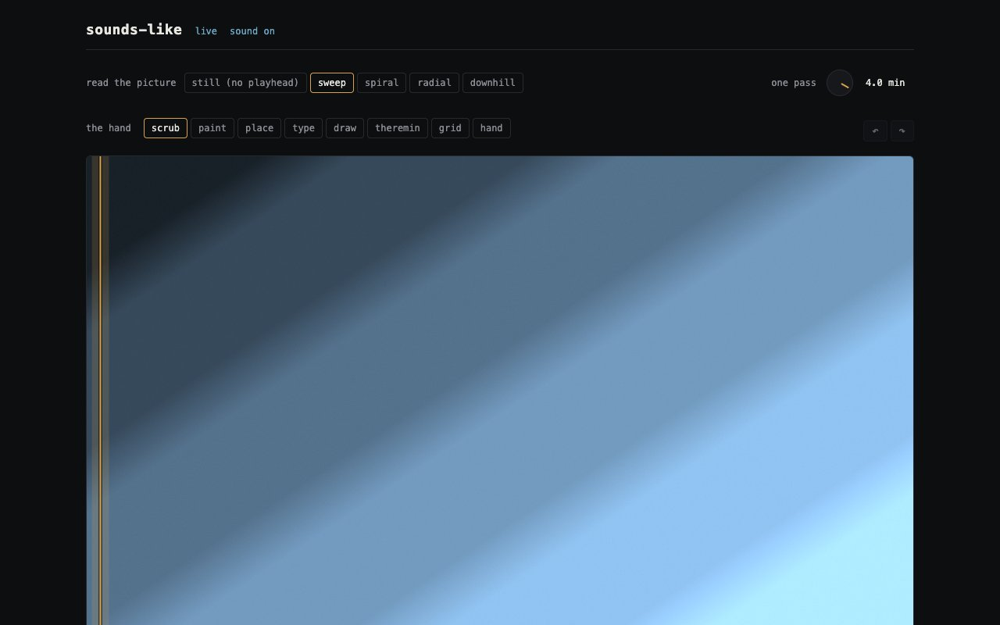
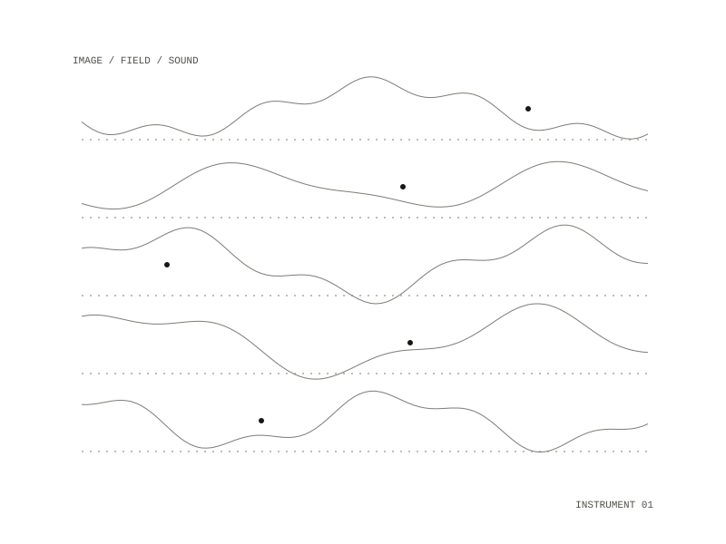

19 / project
sounds-like
A visual music instrument
A picture, a film, a camera or a drone goes in; music comes out, and you can perform with it.


The join
It is the join between three instruments that already exist in this stack. Palimpsest has a complete Web Audio synth and no notion of an image. newmusic generates notes and measures them against seven aesthetic markers, but makes no sound at all. Sigil Studio turns an image into a field and segments it, and has no notion of sound. Both Palimpsest and newmusic carry pitch in cents. That is the join.
Giving it sounds
Give it sounds by walking a folder, or by dropping files onto the sound library at the bottom of the page. A sound is the SHA-256 of its bytes, so re-running adds nothing.
Requires
Docker, Make, git. Nothing else: newmusic is a commit-pinned git dependency, so a fresh clone builds with no sibling repo.
Docker, Make, git. Nothing else: newmusic is a commit-pinned git dependency, so a fresh clone builds with no sibling repo.
Repository: private
All work